library(STUtility2)
library(tibble)
library(dplyr)
library(TabulaMurisSenisData)
library(Seurat)
library(purrr)
library(patchwork)
library(ggplot2)Cell type mapping with NNLS
Mouse brain
Download mouse brain data
For this tutorial, we will use a single-cell dataset from the Allen Brain Atlas. You can check the code chunk below or follow this link to download it manually.
Code
options(timeout=200)
tmpdir <- "." # Set current wd or change to tmpdir()
dir.create(paste0(tmpdir, "/mousebrain"))
targetdir <- paste0(tmpdir, "/mousebrain")
dir.create(paste0(targetdir, "/single-cell"))
destfile <- paste0(targetdir, "/single-cell/allen_brain.rds")
download.file("https://www.dropbox.com/s/cuowvm4vrf65pvq/allen_cortex.rds?dl=1", destfile = destfile)We will also need to download the 10x Visium data from 10x Genomics website. You can download the files directly with R by following the code chunk below or download the data directly from here.
Code
dir.create(paste0(targetdir, "/visium"))
# Download section 1
dir.create(paste0(targetdir, "/visium/S1"))
download.file(url = "https://cf.10xgenomics.com/samples/spatial-exp/1.0.0/V1_Mouse_Brain_Sagittal_Anterior/V1_Mouse_Brain_Sagittal_Anterior_filtered_feature_bc_matrix.h5", destfile = paste0(targetdir, "/visium/S1/filtered_feature_bc_matrix.h5"))
download.file(url = "https://cf.10xgenomics.com/samples/spatial-exp/1.0.0/V1_Mouse_Brain_Sagittal_Anterior/V1_Mouse_Brain_Sagittal_Anterior_spatial.tar.gz",
destfile = paste0(targetdir, "/visium/S1/spatial.tar.gz"))
untar(tarfile = paste0(targetdir, "/visium/S1/spatial.tar.gz"),
exdir = paste0(targetdir, "/visium/S1/"))
file.remove(paste0(targetdir, "/visium/S1/spatial.tar.gz"))
# Download section 2
dir.create(paste0(targetdir, "/visium/S2"))
download.file(url = "https://cf.10xgenomics.com/samples/spatial-exp/1.0.0/V1_Mouse_Brain_Sagittal_Posterior/V1_Mouse_Brain_Sagittal_Posterior_filtered_feature_bc_matrix.h5", destfile = paste0(targetdir, "/visium/S2/filtered_feature_bc_matrix.h5"))
download.file(url = "https://cf.10xgenomics.com/samples/spatial-exp/1.0.0/V1_Mouse_Brain_Sagittal_Posterior/V1_Mouse_Brain_Sagittal_Posterior_spatial.tar.gz",
destfile = paste0(targetdir, "/visium/S2/spatial.tar.gz"))
untar(tarfile = paste0(targetdir, "/visium/S2/spatial.tar.gz"),
exdir = paste0(targetdir, "/visium/S2/"))
file.remove(paste0(targetdir, "/visium/S2/spatial.tar.gz"))Load Visium data with STUtility2 into a Seurat object. The following steps assumes that the mouse brain 10x Visium data is located in ./mousebrain/visium/.
# Assemble spaceranger output files
samples <- Sys.glob("./mousebrain/visium/*/filtered_feature_bc_matrix.h5")
imgs <- Sys.glob("./mousebrain/visium/*/spatial/tissue_hires_image.png")
spotfiles <- Sys.glob("./mousebrain/visium/*/spatial/tissue_positions_list.csv")
json <- Sys.glob("./mousebrain/visium/*/spatial/scalefactors_json.json")
infoTable <- tibble(samples, imgs, spotfiles, json, section_id = paste0("section_", 1:2))
# Create Seurat object with 1 Sagittal Anterior section and 1 Sagittal Posterior section
se_brain_spatial <- ReadVisiumData(infoTable)Load single-cell data
se_allen <- readRDS("./mousebrain/single-cell/allen_cortex.rds")Normalize data
Here we will apply the same log-normalization procedure to both the 10x Visium data (se_brain_spatial) and to the single-cell data (se_brain_singlecell). We set the number of variable features quite high because later on we will use the intersect between the variable features in the single-cell data and the variable features in the 10x Visium data for NNLS. The NNLS method is quite fast so there is actually no need to select only a subset of features. Instead, we can just use all genes that are shared across the single-cell and 10x Visium data.
# Normalize data and find variable features for Visium data
se_brain_spatial <- se_brain_spatial |>
NormalizeData() |>
FindVariableFeatures(nfeatures = 10000)
# Normalize data and run vanilla analysis to create UMAP embedding
se_allen <- se_allen |>
NormalizeData() |>
FindVariableFeatures() |>
ScaleData() |>
RunPCA() |>
RunUMAP(reduction = "pca", dims = 1:30)
# Rerun FindVariableFeatures to increase the number before cell type deconvolution
se_allen <- se_allen |>
FindVariableFeatures(nfeatures = 10000)We can visualize the available cell types in our UMAP embedding of the cells. We have access to 23 annotated cell types, including L2-L6 layer neurons which have a distinct spatial distribution in the tissue.
DimPlot(se_allen, group.by = "subclass")
Run NNLS
The RunNNLS method requires a normalized Seurat object with 10x Visium data and a a normalized Seurat object with single-cell data. The groups argument defines where the cell type labels should be taken from in the single-cell Seurat object. In our single-cell Seurat object, the labels are stored in the “subclass” column.
DefaultAssay(se_brain_spatial) <- "Spatial"
ti <- Sys.time()
se_brain_spatial <- RunNNLS(object = se_brain_spatial,
singlecell_object = se_allen,
groups = "subclass")── Predicting cell type proportions ──ℹ Fetching data from Seurat objects→ Filtering out features that are only present in one data set→ Kept 3378 features for deconvolutionLoading required namespace: RcppMLℹ Preparing data for NNLS→ Downsampling scRNA-seq data to include a maximum of 50 cells per cell type→ Cell type(s) CR have too few cells (<10) and will be excluded→ Kept 22 cell types after filtering→ Calculating cell type expression profilesℹ Predicting cell type proportions with NNLS for 22 cell typesℹ Returning results in a new 'Assay' named 'celltypeprops'ℹ Setting default assay to 'celltypeprops'✔ Finishedsprintf("RunNNLS completed in %s seconds", round(Sys.time() - ti, digits = 2))[1] "RunNNLS completed in 3.23 seconds"# Check available cell types
rownames(se_brain_spatial) [1] "Astro" "Endo" "L2/3 IT" "L4" "L5 IT"
[6] "L5 PT" "L6 CT" "L6 IT" "L6b" "Lamp5"
[11] "Macrophage" "Meis2" "NP" "Oligo" "Peri"
[16] "Pvalb" "Serpinf1" "SMC" "Sncg" "Sst"
[21] "Vip" "VLMC" NB: the CR cell type was discarded because the number of cell was lower than 10. 10 is the lower limit for the allowed number of cells per cell type but this can be overridden with minCells_per_celltype.
Mouse brain cell types
The plots below show the spatial distributions of proportions for a selected set of cell types.
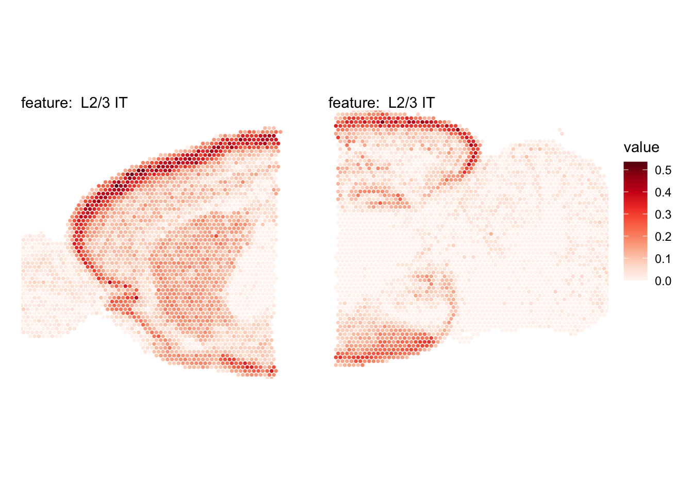
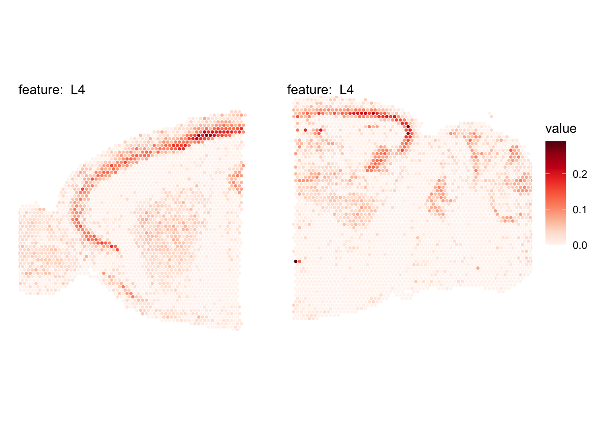
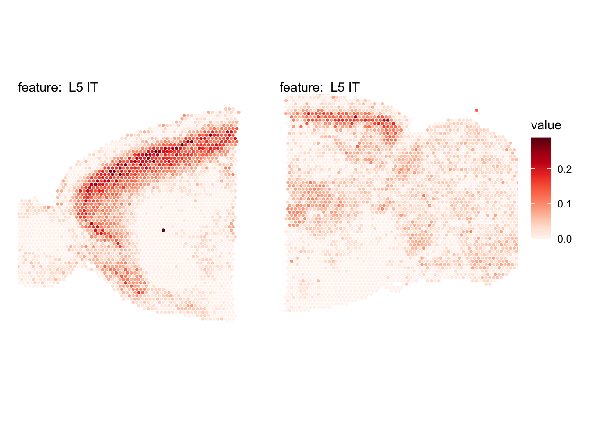
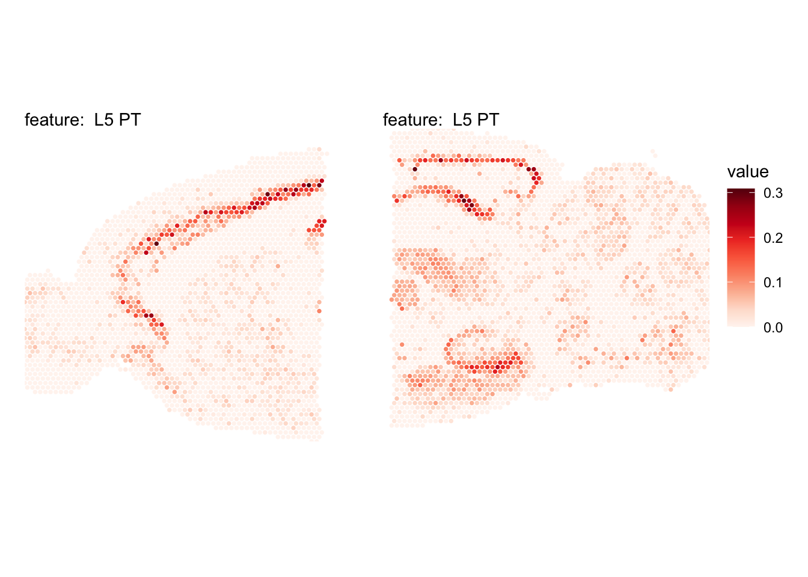
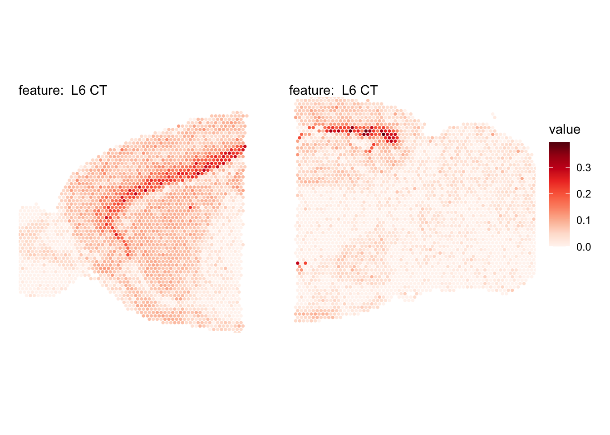
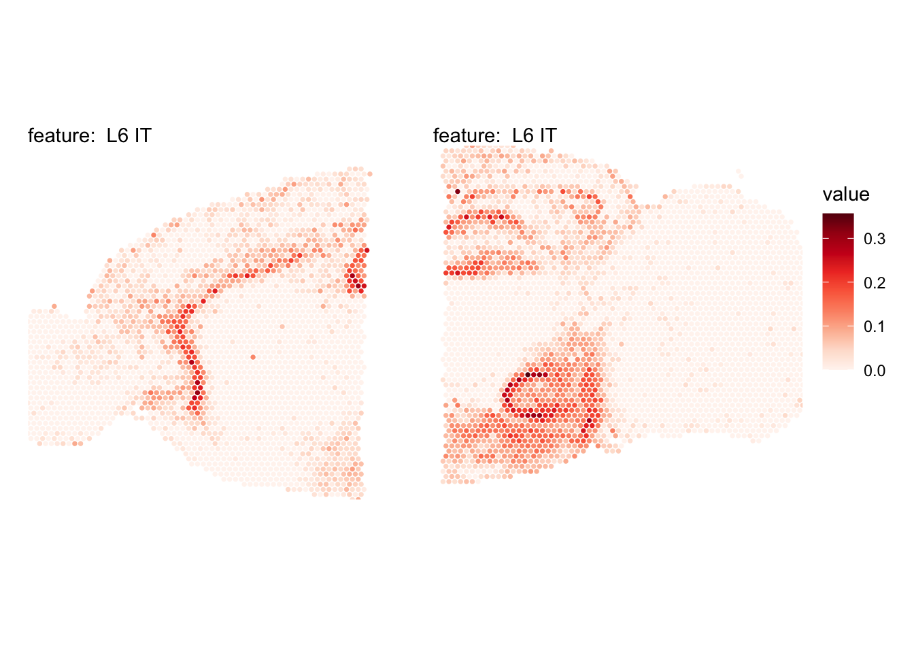
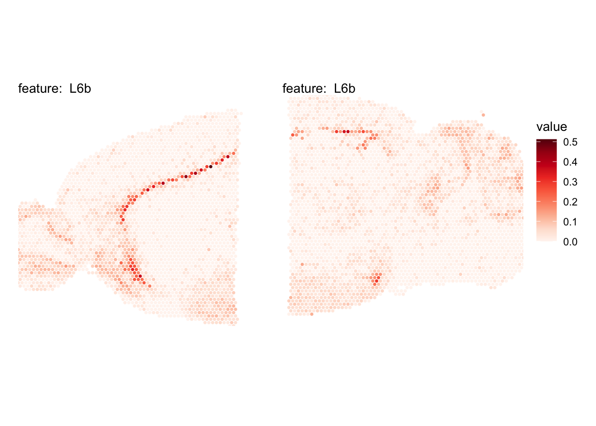
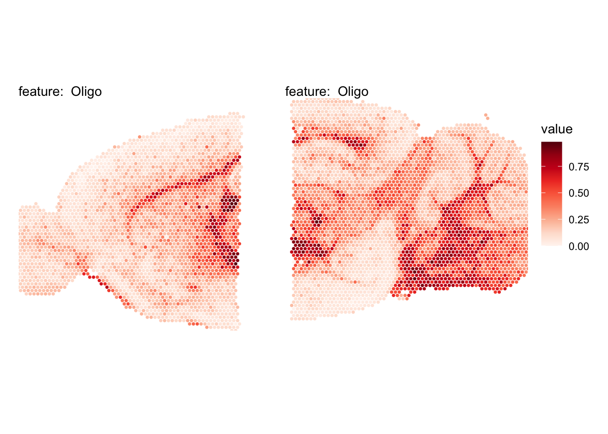
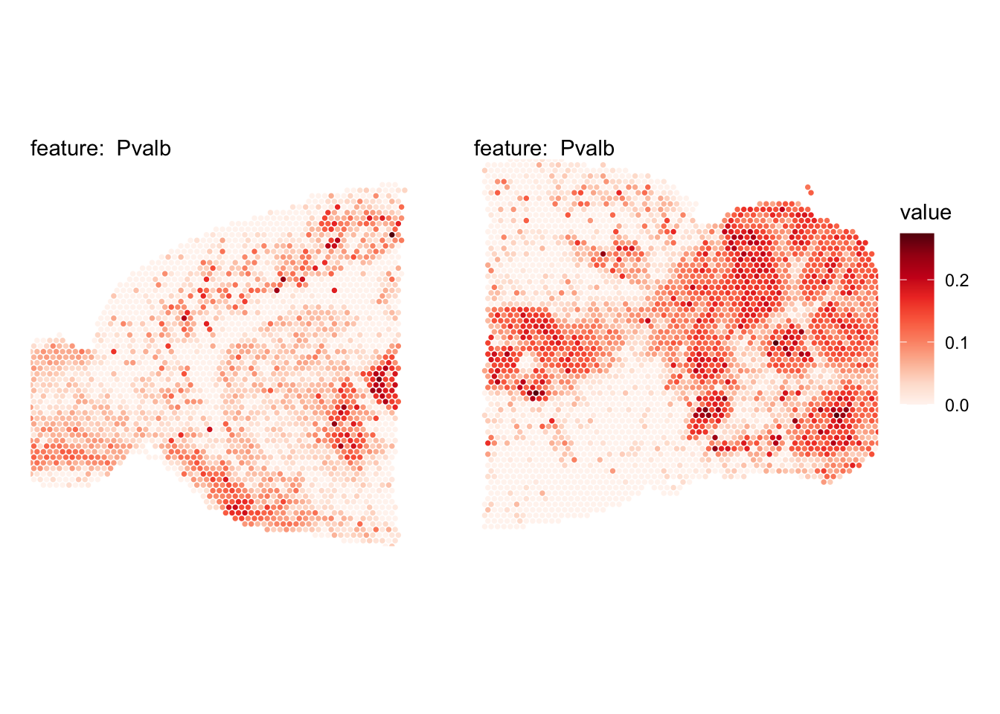
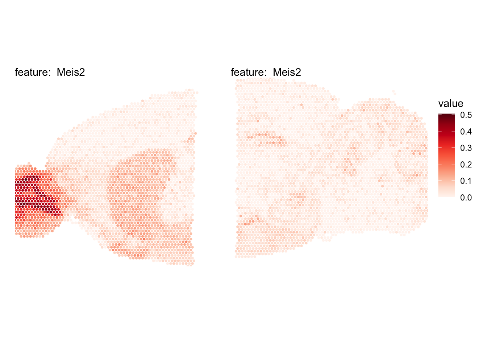
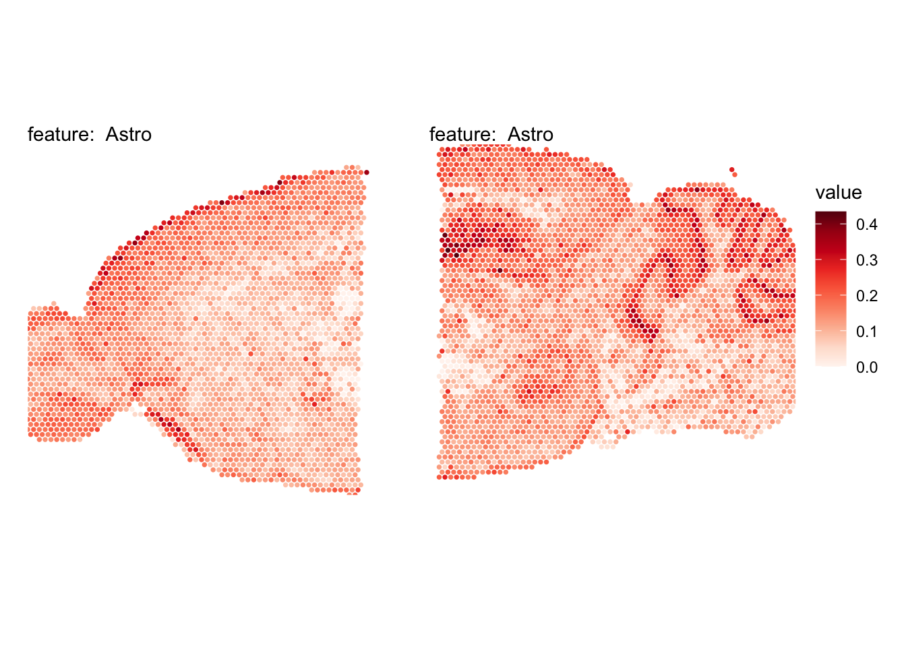
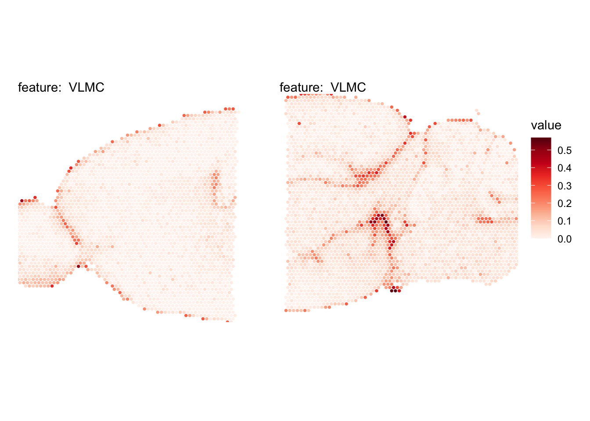
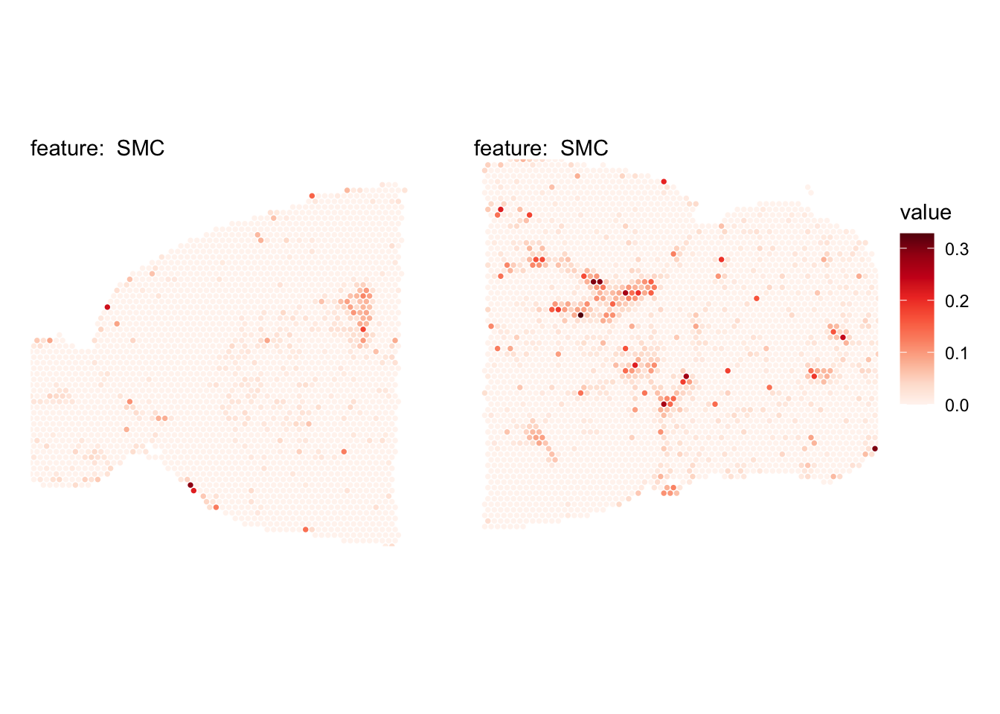
Mouse kidney
In the second example, we’ll look at data from mouse kidney. We can obtain the single-cell data with the TabulaMurisSenisData R package from bioconductor. Let’s load the data and create a Seurat object from it.
Load mouse kidney data
Code
sce <- TabulaMurisSenisDroplet(tissues = "Kidney")$Kidney
umis <- as(counts(sce), "dgCMatrix")
se_kidney_singlecell <- CreateSeuratObject(counts = umis, meta.data = colData(sce) |> as.data.frame())The 10x Visium mouse kidney data can be downloaded from the 10x genomics website.
Code
dir.create(paste0(tmpdir, "/kidney"))
targetdir <- paste0(tmpdir, "/kidney")
dir.create(paste0(targetdir, "/visium"))
# Download section 1
download.file(url = "https://cf.10xgenomics.com/samples/spatial-exp/1.1.0/V1_Mouse_Kidney/V1_Mouse_Kidney_filtered_feature_bc_matrix.h5",
destfile = paste0(targetdir, "/visium/filtered_feature_bc_matrix.h5"))
download.file(url = "https://cf.10xgenomics.com/samples/spatial-exp/1.1.0/V1_Mouse_Kidney/V1_Mouse_Kidney_spatial.tar.gz",
destfile = paste0(targetdir, "/visium/spatial.tar.gz"))
untar(tarfile = paste0(targetdir, "/visium/spatial.tar.gz"),
exdir = paste0(targetdir, "/visium/"))
file.remove(paste0(targetdir, "/visium/spatial.tar.gz"))
samples <- "./kidney/visium/filtered_feature_bc_matrix.h5"
imgs <- "./kidney/visium/spatial/tissue_hires_image.png"
spotfiles <- "./kidney/visium/spatial/tissue_positions_list.csv"
json <- "./kidney/visium/spatial/scalefactors_json.json"
infoTable <- tibble::tibble(samples, imgs, spotfiles, json)
se_kidney_spatial <- ReadVisiumData(infoTable)Normalize data
We apply the same normalization procedure to se_kidney_spatial and se_kidney_singlecell and run FindVariableFeatures to detect the top most variable genes.
se_kidney_spatial <- se_kidney_spatial |>
NormalizeData() |>
FindVariableFeatures(nfeatures = 10000)For the single-cell kidney data, we’ll also filter the data prior to normalization to include cells collected at age 18m and remove cells with labels “nan” and “CD45”. This leaves us with 17 cell types.
keep_cells <- colnames(se_kidney_singlecell)[se_kidney$age == "18m" & (!se_kidney_singlecell$free_annotation %in% c("nan", "CD45"))]
se_kidney_singlecell <- subset(se_kidney_singlecell, cells = keep_cells)se_kidney_singlecell <- se_kidney_singlecell |>
NormalizeData() |>
FindVariableFeatures() |>
ScaleData() |>
RunPCA() |>
RunUMAP(reduction = "pca", dims = 1:30)
se_kidney_singlecell <- se_kidney_singlecell |>
FindVariableFeatures(nfeatures = 10000)Run NNLS
Again, the RunNNLS method requires a single-cell Seurat object and a 10x Visium Seurat object. The cell type annotations are stored in the “free_annotation” column.
ti <- Sys.time()
DefaultAssay(se_kidney_spatial) <- "Spatial"
se_kidney_spatial <- RunNNLS(object = se_kidney_spatial,
singlecell_object = se_kidney_singlecell,
groups = "free_annotation")── Predicting cell type proportions ──ℹ Fetching data from Seurat objects→ Filtering out features that are only present in one data set→ Kept 4993 features for deconvolutionℹ Preparing data for NNLS→ Downsampling scRNA-seq data to include a maximum of 50 cells per cell type→ Cell type(s) CD45 NK cell,CD45 plasma cell have too few cells (<10) and will be excluded→ Kept 15 cell types after filtering→ Calculating cell type expression profilesℹ Predicting cell type proportions with NNLS for 15 cell typesℹ Returning results in a new 'Assay' named 'celltypeprops'ℹ Setting default assay to 'celltypeprops'✔ Finishedsprintf("RunNNLS finished in %s seconds", round(Sys.time() - ti, digits = 2))[1] "RunNNLS finished in 0.48 seconds"# Check available cell types
rownames(se_kidney_spatial) [1] "CD45 B cell"
[2] "CD45 macrophage"
[3] "CD45 T cell"
[4] "Epcam kidney distal convoluted tubule epithelial cell"
[5] "Epcam brush cell"
[6] "Epcam kidney collecting duct principal cell"
[7] "Epcam kidney proximal convoluted tubule epithelial cell"
[8] "Epcam podocyte"
[9] "Epcam proximal tube epithelial cell"
[10] "Epcam thick ascending tube S epithelial cell"
[11] "Pecam fenestrated capillary endothelial"
[12] "Pecam kidney capillary endothelial cell"
[13] "Pecam Kidney cortex artery cell"
[14] "Stroma fibroblast"
[15] "Stroma kidney mesangial cell" NB: two cell types were discarded as they didn’t pass the minimum allowed cells per cell type threshold. The cell types discarded were NK cells and plasma cells.
Kidney cell types
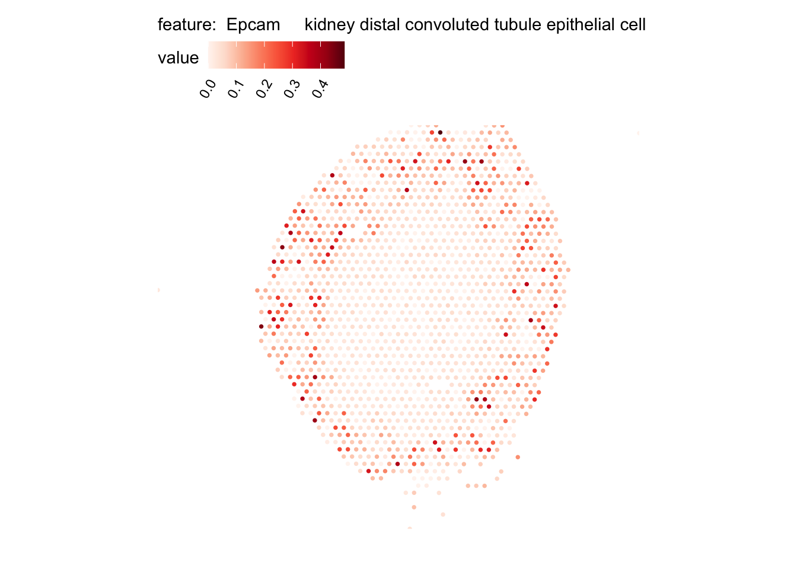